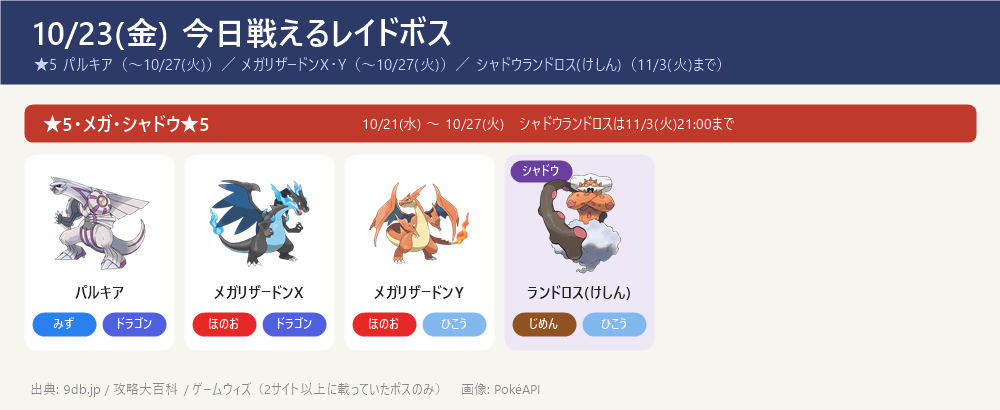
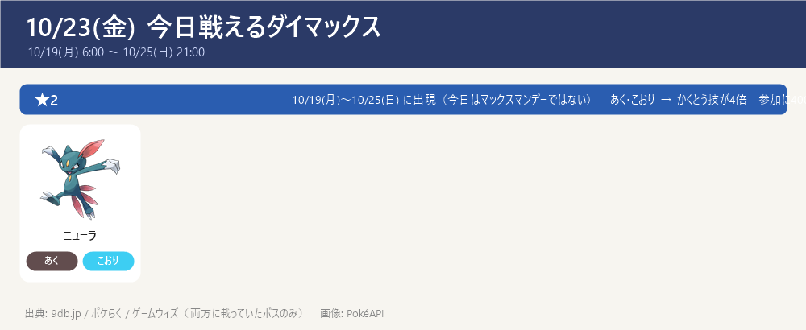
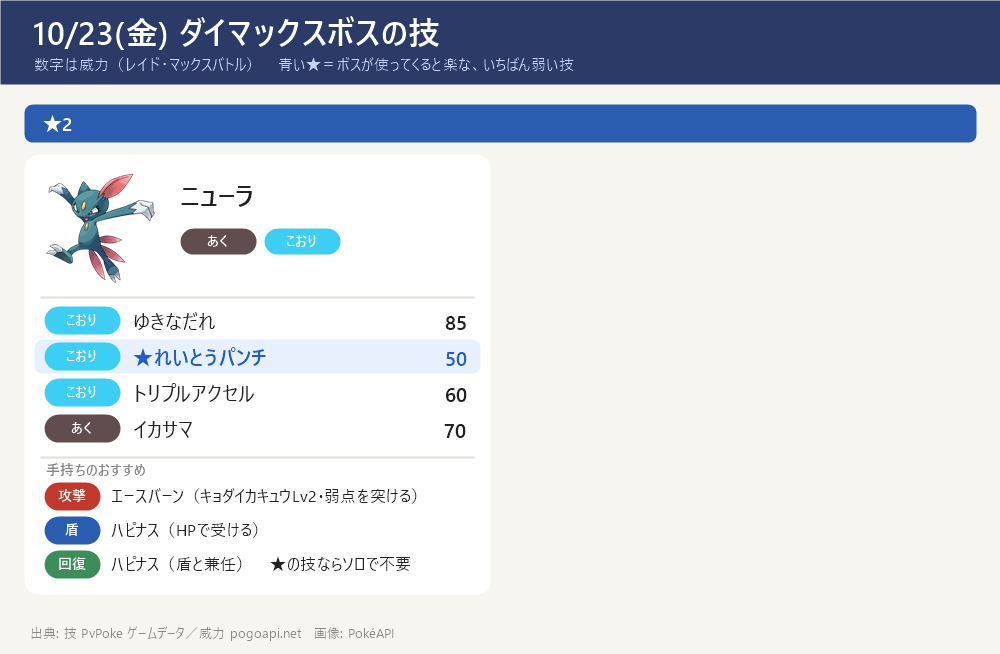

今日のポイント
- 【締切近い】10/24(土) 14:00〜17:00 マックスバトルデイ：ユクシー・エムリット・アグノム（★5 伝説）。ユクシーの攻略ページ作成済み。ゲンガーのダイホロウは Lv3 済み（10/23）
- 【締切近い】メテノシャワー（オリオン座流星群）は 10/24(土) 23:59 まで：毎日 17:00〜21:00 に流れ星が流れ、メテノ（りゅうせいのすがた）に出会いやすい。捕まえたときのほしのすなが増える
- 【締切近い】マックスバトルは ニューラ（★2）が 10/25(日) 21:00 まで（あく・こおり）→ かくとう技が4倍。攻撃はエースバーン（キョダイカキュウLv2）／カイリキー（ダイナックル）。参加に400MP
- 【締切近い】GOパス10月デラックスのキラチャームは 11/8(日) 23:59 まで。GOパスのポイント獲得は 11/3(火) 10:00 まで、報酬の受け取りは 11/5(木) 10:00 まで
- ★5はパルキア（〜10/27(火)）、色違いあり（みず・ドラゴン）→ 弱点はドラゴン・フェアリー技
- メガレイドは メガリザードンX・Y（〜10/27(火)）。X（ほのお・ドラゴン）はいわ・じめん・ドラゴン・フェアリー技、Y（ほのお・ひこう）はいわ技が4倍が弱点
- 11/14(土) ダイマックス ディアルガに向けて強化を進める：カイリキー（カウンター）・ドリュウズ（マッドショット）・受けのメタグロス。スポットライトアワー（すな2倍）などで貯めたすなを強化に回す
東京の巣：東京の巣 10/22(木)〜11/5(木)（別ページ）
今日戦えるレイドボス
★5 パルキア（〜10/27(火)）／ メガリザードンX・Y（〜10/27(火)）／ シャドウランドロス(けしん)（11/3(火)まで）
- ★3・★1（通常レイド）とシャドウ★3/★1 は 2サイトで一致する確定情報が無い → 当日ゲーム内で確認を（下の「サイトで違っていた点」）

今日戦えるダイマックス
10/19(月) 6:00 〜 10/25(日) 21:00
- ※ここに載せたのは9db・ポケらく・ゲームウィズで一致したボスだけ（今週はニューラのみ。10/25(日) 21:00 まで）。9db.jp にはほかに ★3・★2・★1 の多数が載っているが、ポケらくの「出現中」一覧には無い → ゲーム内で確認を
- 【各ボスのスペシャルアタック候補】（下のカード。数字はレイド・マックスバトルでの威力。★＝ボスが使ってくると楽な、いちばん弱い技（ボスと同じタイプの技は1.2倍で計算。こちらのポケモンとの相性は見ていない）。戦闘中に技名が出たら受け役を合わせる）


サカキ対策（シャドウゼクロム）：攻略ページへ（別ページ）
この先の予定（タップで開閉）
- 10/24(土) 14:00〜17:00 マックスバトルデイ：ユクシー・エムリット・アグノム（ユクシーの攻略ページあり）／ 23:59 メテノシャワー終了
- ゲンガーのダイホロウは Lv3 済み（10/23）
- 10/25(日) 21:00 ダイマックス ニューラ 終了
- 10/26(月) マックスマンデー：ヤミラミ（6:00〜21:00）／ 満月（ガチグマに進化可能・夜のみ）
- 10/27(火) 10:00〜 ハロウィン2026 パート1 開始 ／ パルキア・メガリザードンX/Y レイド終了
- 10/28(水)〜 ★5 ギラティナ(オリジン) ／ メガヤミラミ、18:00〜19:00 レイドアワー：ギラティナ(オリジン)
- 10/29(木) 18:00〜19:00 スポットライトアワー：ゴース（進化させるとXP2倍）
- 10/31(土) 14:00〜17:00 スーパーメガレイドデイ：メガシャンデラ
- 11/3(火) 10:00 GOパス10月のポイント獲得終了 ／ 11/5(木) 10:00 報酬受け取り終了
- 11/8(日) 23:59 GOパス10月デラックスのキラチャーム使用期限
- 11/14(土)・15(日) ワイルドエリア：グローバル（ダイマックス ディアルガ・パルキア）→ ボス別の攻略ページ・育成順ページ作成済み（GitHub にも公開）
サイトで違っていた点（タップで開閉）
- キラチャームの期限: 攻略大百科（archives/120139）とゲームウィズ（show/578391）で 11/8(日) 23:59 までで一致（確定）。GOパスのポイント獲得開始日は攻略大百科に10/4とあるが、9db・ポケらくは 10/6(火) 10:00 → 開始は10/6で統一（終了11/3(火) 10:00・報酬受け取り11/5(木) 10:00 は一致）
- ハロウィン2026 パート1の終了: 9db は 11/1(日) 10:00、攻略大百科・ポケらくは 10/31(土) 20:00 と表記が違う → 当日ゲーム内で確認を（開始は10/27(火) 10:00 で一致）
- マックスバトルの現ボス: 9db・ポケらく・ゲームウィズで今週(10/19〜10/25)は ニューラ(★2) のみ一致。WebFetchのAI要約では★5の歴代ボス一覧やニューラを★1と取り違える誤読が出た → ニューラ(★2・10/19 6:00〜10/25 21:00)で統一
- ★3・★1の通常レイドとシャドウ★3/★1: 2サイトで一致する確定情報が無い → 当日ゲーム内で確認を（10/21から継続）
- レイド入れ替わり時刻・メガリザードン終了時刻は 9db と攻略大百科で表記差あり → ゲーム内で確認を
- ダイマックスボスの技候補はゲームデータ(PvPoke)から（おんがえし・やつあたりは除外）、威力は pogoapi.net
出典: 9db.jp/pokemongo（開催イベント一覧 data/4351・レイド日程 data/2308・マックスバトル日程 data/20859）／pokemon.gamepedia.jp/go（攻略大百科 今月のイベント archives/77843・GOパス10月 archives/120139）／pokemongo.gamewith.jp（GOパス10月 show/578391）／pokemongo-raku.com（マックスバトル出現 post95707・10月まとめ post163015）／pvpoke.com ゲームデータ（技候補）
画像: PokéAPI ／ 2サイト以上で一致した情報だけを載せています